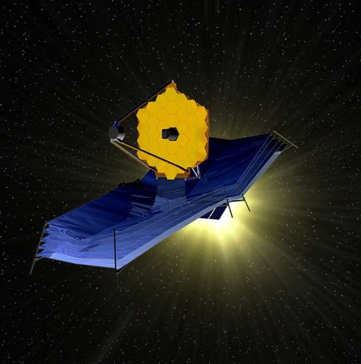

Welcome to this gallery of images taken by the James Webb Space Telescope. This website features some of the most awe-inspiring photos captured by the newest space telescope.

Artist’s Concept of the James Webb Space Telescope (JWST)
One of the earliest concept art pieces. Image Credit: Northrop Grumman
Published: September 10th, 2003
Here you will find:
Detailed information about each photo featured,
When the photo was released,
How to keep updated on the latest from JWST,
And More!
Disclaimer
This is NOT an official website. This website was created for educational purposes related to HTML and CSS formatting. Navigate to the About page for official source material.